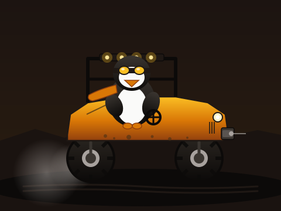

skoffroad
S&K OFFROAD
fetching ~30 MB of off-road sandbox...
WASD drive · Space brake · R reset · 1–6 paint · V camera · Esc menu
I multiplayer · F push-to-talk voice · Shift+F always-on mic · Q webcam
Touch device detected — on-screen controls will appear after loading
if the canvas stays black, your browser may not support WebGPU yet —
try Chrome / Brave / Edge.